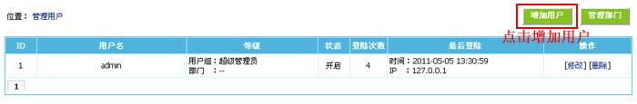

用户管理
选择本节内容
> 增加用户
> 管理用户
本功能为对后台管理员帐号进行管理。
一、登录后台，单击“
用户
”菜单，选择“
管理用户
”子菜单，进入管理用户界面：
二、增加用户：
1、“
管理用户
”界面 -> 点击“
增加用户
”按钮进入增加用户（见下图）：

2、进入增加用户界面：
用户名
管理员登录用户名
是否禁止
设置禁用帐号。
密码
管理员登录密码。密码设置6位以上，且密码不能包含：$ & * # < > ' " / \ % ; 空格
安全提问
如果启用安全提问，登录时需填入相应的项目才能登录。
安全回答
启用安全提问时，此项必须设置。
姓名
真实姓名。
邮箱
联系邮箱。
用户组
选择所属用户组。
所属部门
选择所属部门。
后台样式
选择此用户的默认后台界面。
管理的栏目信息
设置此用户可管理信息的栏目(所属用户组不启用“可操作所有信息栏目”时有效)。
应用于附件权限
：将上面栏目的附件权限也赋以此用户。
三、管理用户：
1、增加用户后，返回“管理用户”界面（见下图）：